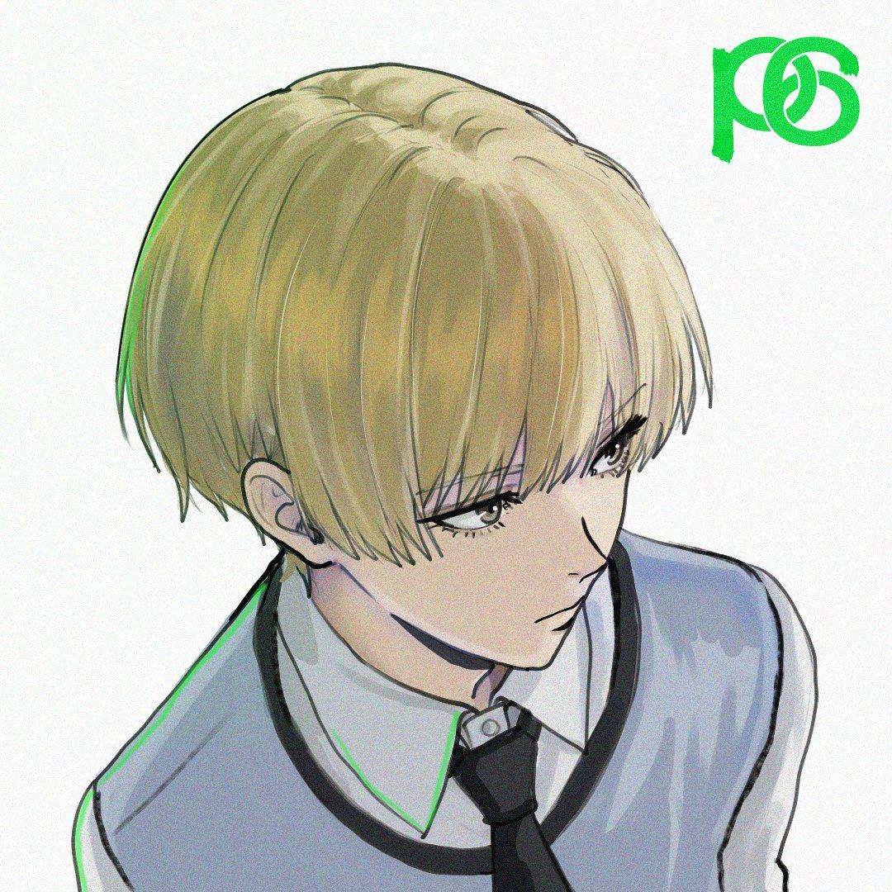
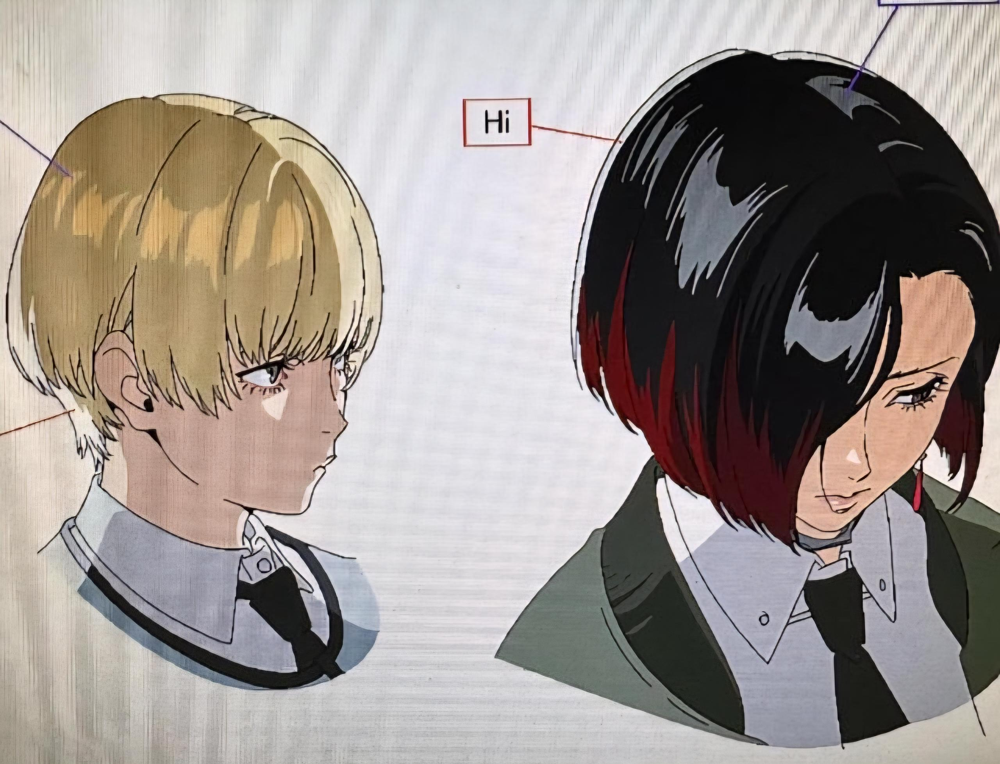
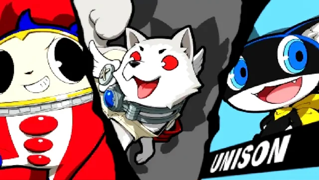

.jpg)
O Próximo Passo da Atlus (Em Desenvolvimento)
Confirmado oficialmente pela Atlus, Persona 6 representa uma quebra de ciclo. O jogo está sendo desenvolvido por uma equipe totalmente nova de mentes brilhantes dentro do estúdio P-Studio, prometendo manter a essência da franquia, mas trazendo uma enorme evolução estrutural para se adequar à atual geração de consoles.
Seguindo o padrão de identidade visual estabelecido desde o 3 (Azul, Amarelo e Vermelho), artes promocionais e celebrações de aniversário da empresa deixaram explícito que a cor tema do novo jogo será o Verde. Na psicologia das cores, o verde pode representar inveja, crescimento, ecologia, juventude ou até mesmo sorte/destino, alimentando milhares de discussões na internet.
Grandes Teorias da Fandom sobre o Enredo
Dualidade e Universidades
Uma das teorias mais fortes aponta que o jogo se passará em uma faculdade ou escola de artes de grande porte. A temática principal giraria em torno do peso das escolhas da vida adulta versus as expectativas da sociedade sobre os jovens, abordando o contraste entre progresso tecnológico e preservação ambiental.
A Mudança da Velvet Room
Com a trágica morte do dublador japonês clássico de Igor, a fandom especula que a Velvet Room mudará drasticamente. O tema teorizado para o espaço em Persona 6 é o de uma Estufa de Plantas Exóticas ou uma Galeria de Arte Subterrânea, onde os "sentimentos humanos são cultivados ou emoldurados".
O Novo "Outro Mundo"
Se o 4 usava a TV e o 5 usava o Metaverso, a teoria da vez diz respeito à Realidade Aumentada ou Sonhos Coletivos. Os heróis utilizariam algum tipo de dispositivo óptico ou interface biológica para enxergar as distorções mentais grudadas na própria arquitetura da cidade real.
Elenco Especulado & Personagens Vazados

O Protagonista Vazado ("Kuro Shiro")
De acordo com vazamentos de codinomes internos de desenvolvimento, o protagonista masculino é tratado temporariamente como "Kuro Shiro". Leakers apontam que ele pode começar o jogo como um estudante transferido de intercâmbio, trazendo um ponto de vista "estranho" à cultura local. Sua suposta Persona inicial seria baseada em figuras mitológicas celtas associadas à natureza.

A Escolha de Gênero (Fandombase)
Uma teoria que divide a comunidade diz que Persona 6 trará a opção de escolher o gênero do protagonista logo no início (assim como em P3P), ou terá uma mecânica de Protagonistas Duplos atuando juntos no enredo. O codinome vazado "Shiro" para uma personagem feminina central reforça essa forte hipótese.

O Mascote Alado (Teoria)
Para dar sequência à linha de mascotes (Teddie e Morgana), rumores sugerem que o mascote de Persona 6 será uma ave inteligente — possivelmente um Papagaio ou uma Coruja — que vive disfarçado em um pet shop local. Ele atuaria como o alívio cômico e navegador inicial das masmorras cognitivas.
O Estudante de Elite Invejoso
Aproveitando o tema do "Verde" como símbolo de inveja (Green-eyed monster), a fandom teoriza um membro do grupo que começa como o aluno perfeito e herdeiro prodígio, mas que nutre um rancor e ciúme doentio pelas habilidades e liberdade do protagonista, gerando uma grande traição no meio da história.
Plataformas e Janelas Estimadas
Lançamento Global Simultâneo
Seguindo os passos de Persona 3 Reload e Metaphor: ReFantazio, está praticamente confirmado que Persona 6 quebrará a antiga tradição de sair primeiro no Japão. O game terá um lançamento mundial unificado para todas as regiões e com legendas em múltiplos idiomas, incluindo o Português do Brasil.
Consoles da Atual Geração
O jogo está sendo desenvolvido tendo como foco o hardware do PlayStation 5, Xbox Series X/S e PC.